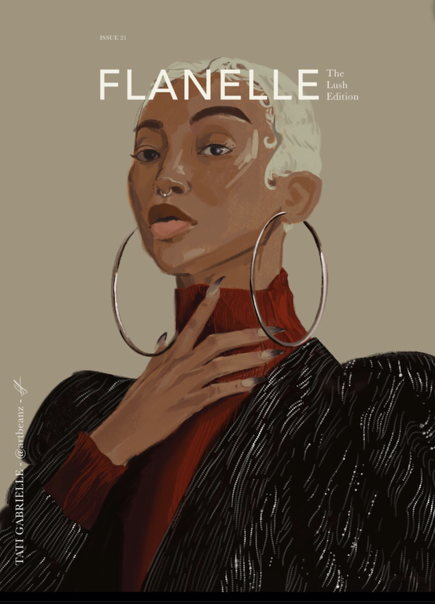

In some of my current projects, I recently created a Meet the Boards Director carousel post for
Aggieworks. I remember trying to keep a consistent theme throughout the post, as well as making
sure I have all the correct names, pictures, and information for the post before finalizing it
to my marketing team. To make the images pop, I created a glow around each picture and the title
to make it look like a neon sign. I did a lot of reiterations to rearrange the pictures to make it
consistent and look neat.
Another current work I recently finished is the redrawn magazine cover of the actress, Tati Gabrielle.
I wanted to practice using skin colors and play around with some of the selection tools of the app
Procreate, which were the beaded highlights on her coat in the picture. Since coloring on a tablet is very
different from traditional paper, I had a lot more options to choose color-wise. I also had to pay attention
to how I should apply skin color on digital art. Another part of recreating the magazine was the fonts used in
the header and the small captions on the sides of the photos. It was interesting going through all the fonts and
options to see what fit well on the cover and what didn't. It was overall a fun project that makes me want to
recreate other magazine covers to blend them as traditional and photographic art.
